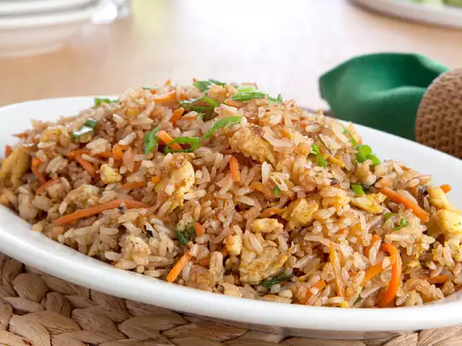

LUCIOUS CRAVINGS
INTRODUCTION
Hi! Welcome to Lucious Cravings! Here you can find the step by step process to make three of my most favorite dishes to savor. So lets jump right into it!.
In here, you will learn to make:
- Veg Sandwich
- Cheese Taco
- Oreo Milkshake
- Maggi
- Fried Rice
Table of Contents
- Veg sandwich
- Cheese taco
- Oreo Milkshake
- Maggi
- Fried Rice
Veg Sandwich
To make a veg sandwich, you will need the following ingredients:
- Bread
- Coriander Chutney
- Butter
- Spices and Chat Masala
- Tomatoes
- Cucumber
- Any other vegetables of your choice
- STEP 1: Chop up the tomatoes, cucumbers, and any other vegetables into nice, thin slices.
- STEP 2: Ready your bread by applying Coriander chutney on the insides. You may also use sauce if you want.
- STEP 3: Place your nicely cut slices onto the bread. Sprinkle the spices and chat masala from above.
- STEP 4: Place the top bread on the filling, and apply butter from the outside on both the bread slices.
- STEP 5: Place the sandwich onto a grill and then place it in the oven. grill it for atleast 2 minutes, more if you deem fit. You could also cook the sandwich on a pan if you don't have an oven.
- STEP 6: Once cooked crisp brown, take them out, place them on a nice plate, and now you can enjoy your hot and crispy veg sandwich!
Cheese Taco
To make a cheese taco, you will need the following ingrdients:
- Tortillas(packaged or homemade)
- Butter
- Cheese
- Salsa or any other spicy sauce available
- Any other filling you might want to add(leftover vegetables, meat, avocado, etc)
- STEP 1: Prepare all the ingredients-grate the cheese, slice up the vegetables you are going to add, etc.
- STEP 2: Butter up the tortilla and heat it on the pan until it bubbles.
- STEP 3: Add the grated cheese onto the tortilla and let it melt.
- STEP 4: Remove the tortilla from the pan and add the sauce, and any extras you have prepared on half of the tortilla.
- STEP 5: flip the tortilla into a half place it onto a plate, alongwith some sauce on the side. And now you are ready taste something new!
Oreo Milkshake
To make an Oreo Milkshake, you will need the following things:
- Mlik
- Oreo Biscuits
- Vanilla ice cream(optional)
- Chocolate syrup
- Sugar
- STEP 1: Take a bowl and coarsely crush the Oreo cookies in it.
- STEP 2: Pour milk and chocolate syrup into the mixer, and blend it together. Later and the oreo crush(not all) Blend it once again.
- STEP 3: Pour the mix into a glass.
- STEP 4: Add the remaining oreo crumbs and some more chocolate syrup from top. You could also add a scoop of vanilla ice cream. and there you go! a perfect drink to end this "three course meal :)"
Maggi
 To make Maggi, you will need the following ingredients:
To make Maggi, you will need the following ingredients:
- Maggi packets
- Edible vegetable oil
- Salt
- Vegetables
- Water
- STEP 1: Pour 1 cup of water per packet of maggi. Cook it properly.
- STEP 2: Drain the water. Add 2 tablespoons of edible vegetable oil to the cooked noodles.
- STEP 3: Add the maggi masala present already in the packet(no need to put salt, but you could if you want). Stir nicely.
- STEP 4: Now add chopped and cooked vegetebles to the maggi and mix it well. Let it simmer for a while
- STEP 5: Take the piping hot maggi onto a plate and enjoy your meal!
Fried Rice
To make Paneer Masala, you need the following ingredients:
- Leftover cooked rice
- Eggs
- Spices
- Soy Sauce
- Carrots and green peas(or any other vegetables you want)
- Minced Garlic
- Sesame Oil
- STEP 1: Add thr green peas and chopped carrots to a wok. Then add an egg into it. stir nicely.
- STEP 2: Now add the leftover rice to the wok and mix it till even.
- STEP 3: Add little sesame oil to it and mix it. then add soy sauce and mix it well.
- STEP 4: After it is mixed and cooked well, serve the delicious fried rice on a plate treat yourself to this beauty!
So that's it! Now you know three of the most delicious dishes to exist and how to make them! Now go break the dust in your kitchen and whip up these delicious dishes for yourselves!
Until next time!